that commute with , that is 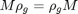 for all in the group.
that commute with , that is 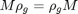 for all in the group.This document will show some features of RepLAB.
Before trying any of the RepLAB commands, we must first add the paths:
replab_addpaths
RepLAB decomposes representations of permutation groups; this does not lose generality as all finite groups can be represented by permutation groups.
We construct the symmetric group acting on 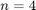 elements.
n = 4;
The symmetric group is generated by a cyclic permutation 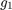:
g1 = [2:n 1];
and one transposition 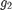:
g2 = [2 1 3:n];
Remark that permutations in RepLAB are simply row vectors of images. We use the convention that permutations act on indices 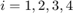 *on the left*, thus the image of 3 under is compatible with MATLAB syntax:
g2(3)
ans =
3
We construct the group by calling a static method on replab.PermutationGroup:
S4 = replab.PermutationGroup.fromGenerators({g1 g2})
S4 = replab.PermutationGroup instance with 2 generators a: 2 3 4 1 b: 2 1 3 4
noting that the generators of the group are named 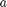, 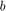,...
We can perform a few operations on finite groups. Let 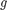 be a random permutation, which we can obtain in (mostly) equivalent ways by either
g = randperm(n); g = S4.sample; g = S4.sampleUniformly;
But for the example, we fix the random sample.
g = [3 2 4 1]
g =
3 2 4 1
We can factor the last in the group generators:
w = S4.factorization(g)
w = a b
to obtain a word in the generators and . We evaluate back this word:
g1 = S4.evaluateWord(w)
g1 =
3 2 4 1
to obtain back .
We can also compute the group order or enumerate the elements of the group
S4.order
ans =
24
S4.elements
ans = Enumerator of 24 elements at( 1) = 1 2 3 4 at( 2) = 4 2 3 1 at( 3) = 3 2 4 1 ..18 elements omitted.. at(22) = 4 1 3 2 at(23) = 3 1 4 2 at(24) = 2 1 4 3
a technique that works even for big groups.
S30 = replab.PermutationGroup.fromGenerators({[2:30 1] [2 1 3:30]})
S30.order
S30 =
replab.PermutationGroup instance with 2 generators
a: 2 3 4 5 6 7 8 9 10 11 12 13 14 15 16 17 18 19 20 21 22 23 24 25 26 27 28 29 30 1
b: 2 1 3 4 5 6 7 8 9 10 11 12 13 14 15 16 17 18 19 20 21 22 23 24 25 26 27 28 29 30
ans =
265252859812191058636308480000000
S30.elements
ans = Enumerator of 265252859812191058636308480000000 elements at( 1) = 1 2 3 4 5 6 7 8 9 10 11 12 13 14 15 16 17 18 19 20 21 22 23 24 25 26 27 28 29 30 at( 2) = 1 2 3 4 5 6 7 8 9 10 11 12 13 14 15 16 17 18 19 20 21 22 23 24 25 26 27 28 30 29 at( 3) = 1 2 3 4 5 6 7 8 9 10 11 12 13 14 15 16 17 18 19 20 21 22 23 24 25 26 27 29 30 28 ..265252859812191058636308479999994 elements omitted.. at(265252859812191058636308479999998) = 10 22 15 27 4 21 23 29 2 18 26 20 1 16 9 19 28 12 24 8 3 14 5 25 13 30 17 6 7 11 at(265252859812191058636308479999999) = 10 22 15 27 4 21 23 29 2 18 26 20 1 16 9 19 28 12 24 8 3 14 5 25 13 30 17 11 7 6 at(265252859812191058636308480000000) = 10 22 15 27 4 21 23 29 2 18 26 20 1 16 9 19 28 12 24 8 3 14 5 25 13 30 17 11 6 7
The natural representation of 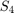 simply permutes the coordinates of 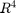:
rho = S4.naturalRepresentation
rho =
Unitary representation of dimension 4 with generator images
- a:
0 0 0 1
1 0 0 0
0 1 0 0
0 0 1 0
- b:
0 1 0 0
1 0 0 0
0 0 1 0
0 0 0 1
We take two elements of :
g = [2 3 1 4] h = [2 1 4 3]
g =
2 3 1 4
h =
2 1 4 3
and their composition
gh = g(h)
gh =
3 2 4 1
and verify that we have a representation of the group
rho.image(g) * rho.image(h) rho.image(gh)
ans =
0 0 0 1
0 1 0 0
1 0 0 0
0 0 1 0
ans =
0 0 0 1
0 1 0 0
1 0 0 0
0 0 1 0
We can also define representations from their images. Here, we define the sign representation (using a permutation representation of it!).
dim = 2;
isUnitary = true;
rho1 = S4.representation(dim, {[0 1; 1 0] [0 1; 1 0]}, isUnitary)
rho2 = S4.permutationRepresentation(2, {[2 1] [2 1]})
rho1 =
Unitary representation of dimension 2 with generator images
- a:
0 1
1 0
- b:
0 1
1 0
rho2 =
Unitary representation of dimension 2 with generator images
- a:
0 1
1 0
- b:
0 1
1 0
rho1.image(g) rho2.image(g)
ans =
1 0
0 1
ans =
1 0
0 1
RepLAB provides the isotypic decomposition over the real numbers:
rho.isotypic
ans = Isotypic decomposition with 2 components of sizes 1 3
and the decomposition into irreducible representations over the reals, identifying the representation type (real, complex or quaternionic):
rho.irreducible
ans = Irreducible decomposition with components I(1)xR(1) + I(1)xR(3)
We can get subrepresentations with their bases:
[subrho1 U1] = rho.irreducible.representation(1)
subrho1 =
Unitary representation of dimension 1 with generator images
- a:
1
- b:
1
U1 =
-0.5000
-0.5000
-0.5000
-0.5000
[subrho2 U2] = rho.irreducible.representation(2)
subrho2 =
Unitary representation of dimension 3 with generator images
- a:
-0.53007 -0.11684 0.83986
0.83516 -0.24335 0.49325
-0.14675 -0.96288 -0.22657
- b:
0.94271 0.32404 0.079408
0.32404 -0.83265 -0.44911
0.079408 -0.44911 0.88994
U2 =
-0.3600 0.7407 -0.2679
-0.1207 -0.6131 -0.5996
-0.3680 -0.2474 0.7439
0.8487 0.1198 0.1236
The centralizer algebra of 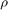 is composed of all the matrices that commute with , that is 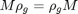 for all in the group.
RepLAB gives an access to that algebra:
A = rho.centralizerAlgebra
A = Algebra of 4 x 4 matrices of dimension 2
and we can sample generic matrices from that algebra
A.sample
ans = -0.2248 -0.4342 -0.4342 -0.4342 -0.4342 -0.2248 -0.4342 -0.4342 -0.4342 -0.4342 -0.2248 -0.4342 -0.4342 -0.4342 -0.4342 -0.2248
or perform an orthogonal projection of arbitrary matrices in that algebra
Mgen = rand(n, n)
Mgen =
0.3780 0.5220 0.4622 0.6988
0.1322 0.4586 0.8575 0.7928
0.2108 0.7002 0.1124 0.2846
0.3728 0.9000 0.2178 0.5405
M = A.project(rand(n,n))
M =
0.5350 0.5412 0.5412 0.5412
0.5412 0.5350 0.5412 0.5412
0.5412 0.5412 0.5350 0.5412
0.5412 0.5412 0.5412 0.5350
Now, given in the algebra, we can get its blocks:
blocks = rho.irreducible.blocksOfCentralizer(M)
blocks =
1x2 cell array
{[2.1586]} {[-0.0061]}
which correspond to the block diagonalization of such matrices in the symmetry adapted basis:
U = rho.irreducible.adaptedBasis
U = -0.5000 -0.3600 0.7407 -0.2679 -0.5000 -0.1207 -0.6131 -0.5996 -0.5000 -0.3680 -0.2474 0.7439 -0.5000 0.8487 0.1198 0.1236
U'*M*U
ans =
2.1586 -0.0000 0.0000 0.0000
-0.0000 -0.0061 -0.0000 -0.0000
0.0000 0.0000 -0.0061 -0.0000
0.0000 -0.0000 0.0000 -0.0061